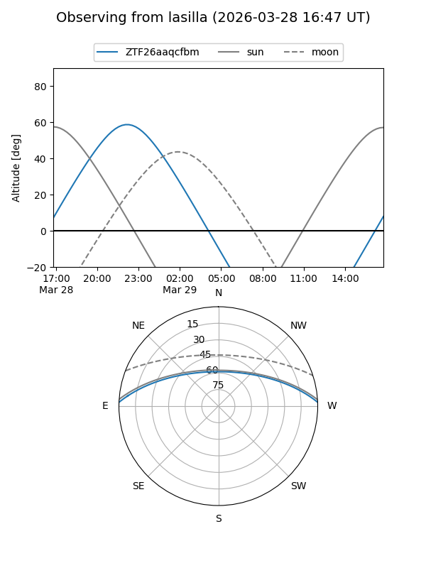
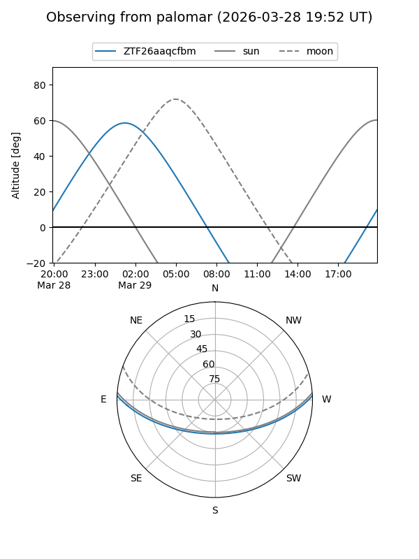

ZTF26aaqcfbm
Target ZTF26aaqcfbm at 2026-03-29 06:15
Aliases and brokers:
FINK: link
Lasair: link
ALeRCE: link
alt names
ZTF26aaqcfbm (ztf,fink_ztf)
Coordinates:
equatorial (ra, dec) = 87.7589,+1.93766
equatorial (HMS+DMS) = 05:51:02.14,+01:56:15.59
galactic (l, b) = (204.1645,-12.49204)
Flags:
Photometry:
last ztfg=17.32, ztfr=16.19
1 ztfg, 1 ztfr detections
Lightcurve
Visibility


Additional plots